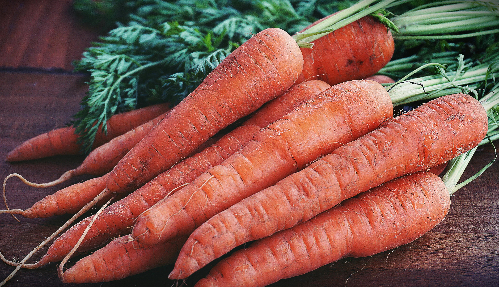
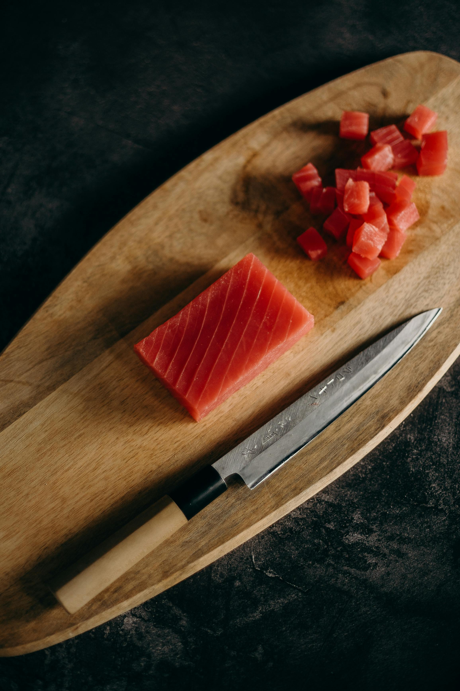
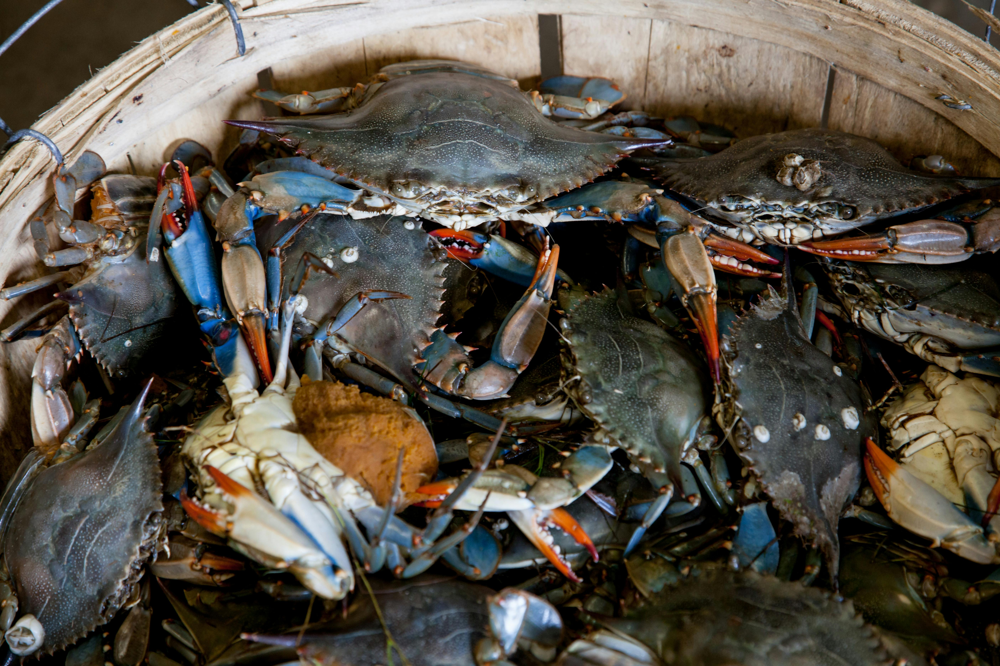

Quản lý sản phẩm
Thêm sản phẩm mới

Bơ Booth
Giá: 50,000 VND/(1kg)
Nho Mẫu Đơn
Giá: 150,000 VND/(1kg)

Táo Mỹ
Giá: 150,000 VND/(1kg)

Việt quất
Giá: 180,000 VND/(1kg)

Táo xanh
Giá: 80,000 VND/(1kg)

Dâu Tây Đà Lạt
Giá: 100,000 VND/(1kg)

Bắp cải xanh
Giá: 25,000 VND/(1kg)

Cà Chua
Giá: 20,000 VND/(1kg)

Cà Rốt
Giá: 30,000 VND/(1kg)

Khoai Tây
Giá: 25,000 VND/(1kg)

Bông cải trắng
Giá: 35,000 VND/(1kg)

Cà tím loại 1
Giá: 20,000 VND/(1kg)

Cua Hoàng Đế
Giá: 800,000 VND/(1kg)

Cá hồi miền
Giá: 200,000 VND/(1kg)

Thịt cá ngừ đại dương
Giá: 200,000 VND/(1kg)

Ghẹ
Giá: 250,000 VND/(1kg)

Tôm
Giá: 250,000 VND/(1kg)
Sò Huyết
Giá: 70,000 VND/(1kg)
Đùi gà thả vườn
Giá: 120,000 VND/(1kg)

Thịt bò thượng hạng
Giá: 350,000 VND/(1kg)

Trứng gà thả vườn
Giá: 40,000 VND/(1kg)

Gà ta
Giá: 150,000 VND/(1kg)
Thịt cá ngừ đại dương
Giá: 200,000 VND/(1kg)

Bắp Mỹ
Giá: 15,000 VND/(1kg)

Dưa chuột
Giá: 18,000 VND/(1kg)

Tỏi khô
Giá: 50,000 VND/(1kg)

Bí ngòi xanh
Giá: 25,000 VND/(1kg)
Rong nho
Giá: 50,000 VND/(1kg)

Lúa mì
Giá: 30,000 VND/(1kg)
Ngô ngọt
Giá: 17,000 VND/(1kg)
Khoai lang
Giá: 30,000 VND/(1kg)

Hành tây
Giá: 25,000 VND/(1kg)